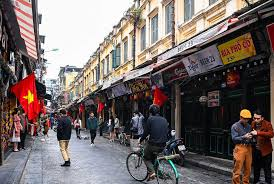

Hà Nội – Thủ Đô Ngàn Năm Văn Hiến
Giới Thiệu
Hà Nội là thủ đô của Việt Nam, một trong những thành phố lâu đời nhất Đông Nam Á với hơn 1000 năm lịch sử. Thành phố nổi tiếng với những hồ nước xanh mát, đền chùa cổ kính và nền ẩm thực phong phú đặc sắc.
Những Điểm Tham Quan Nổi Bật
- Hồ Hoàn Kiếm và Tháp Rùa
- Văn Miếu – Quốc Tử Giám
- Lăng Chủ tịch Hồ Chí Minh
- Phố cổ Hà Nội (36 phố phường)
- Hoàng thành Thăng Long
Ẩm Thực Hà Nội
Hà Nội nổi tiếng với nhiều món ăn truyền thống đặc sắc:
- Phở Hà Nội – Món ăn linh hồn của người Hà Nội
- Bún chả – Đặc sản nổi tiếng thế giới
- Chả cá Lã Vọng
- Bánh cuốn Thanh Trì
Hình Ảnh Hà Nội

Tìm Hiểu Thêm
Bạn muốn biết thêm về Hà Nội? Hãy truy cập trang thông tin chính thức:
Xem thêm về Hà Nội trên Wikipedia